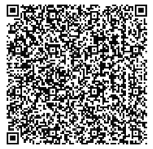

MÃ QR-CODE ĐẶT LỊCH ĐĂNG KIỂM CỦA BẠN

(Vui lòng xuất trình cho nhân viên tiếp đón)
Giấy tờ bạn cần chuẩn bị
- 1. Đăng ký xe (Đối với xe thế chấp hoặc vay ngân hàng cần giấy biên chấp nhận và đăng ký xe công chúng còn thời hạn).
- 2. Đăng kiểm xe cũ